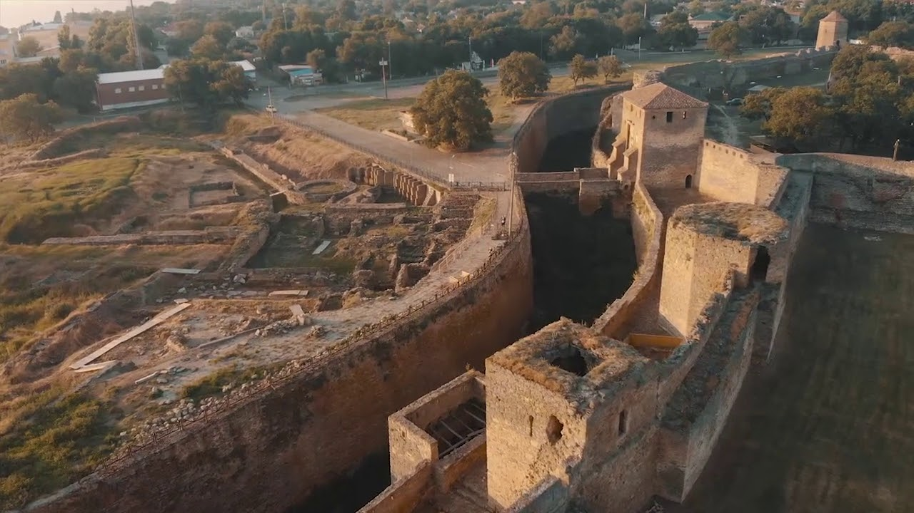
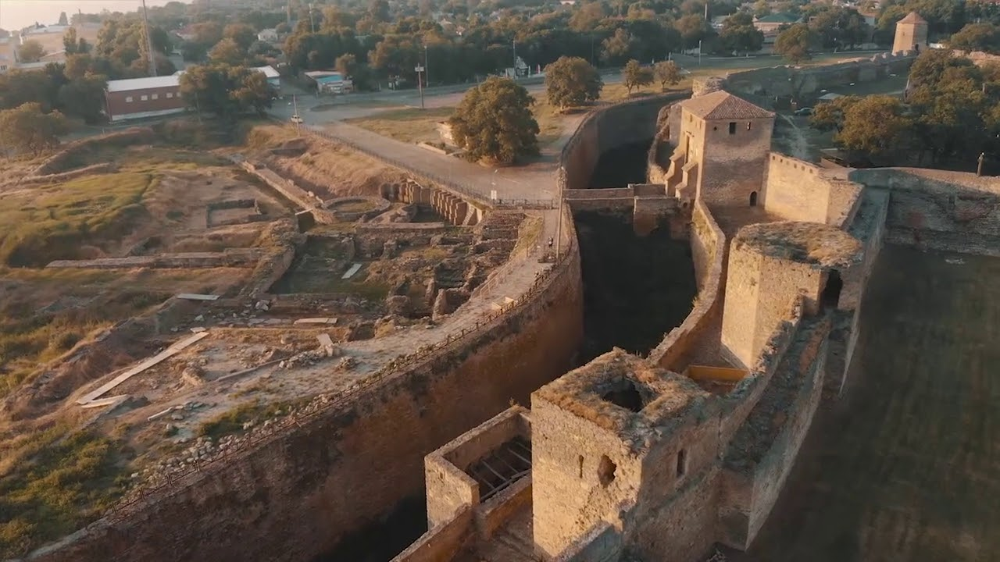
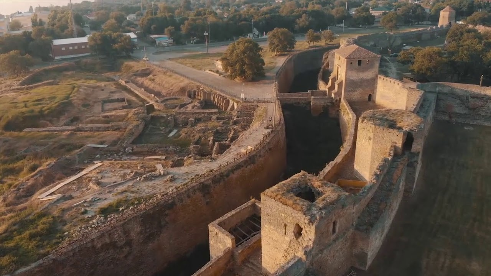
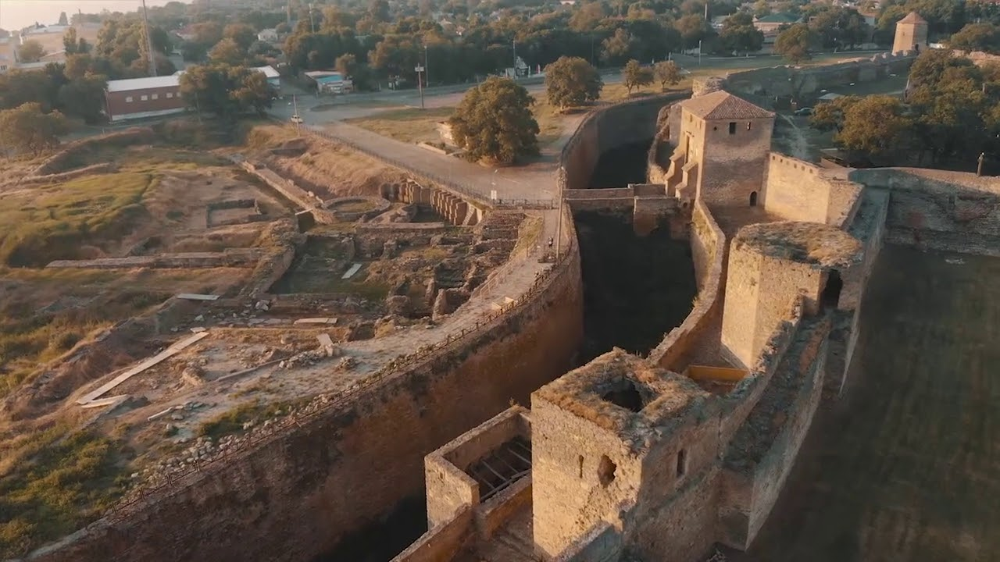

The Akkerman Fortress is one of the most powerful and fascinating fortresses in the south. Its well-preserved walls, towering above the dark waters of the estuary, still impress visitors with their grandeur and impregnability.
The fortress stands on the rocky shore of the Dniester Estuary on the site of Tyra, an ancient Greek polis of the 5th–4th centuries BC. The fortifications, formed during the 14th–15th centuries, belong to the tower-and-wall type. The complex consists of four parts: the citadel (or Genoese castle), the northern (garrison), southern, and port courtyards.
The oldest part is the citadel, built in the second half of the 13th and the first half of the 14th century, presumably by the Genoese. In plan, it is a quadrangle with four round corner towers. An entrance gate was arranged in the southern defensive wall, and residential buildings and a chapel were located inside the courtyard.
The massive defensive walls, 3–5 meters thick and about 15 meters high, were topped with merlons. Open fighting galleries connected them with five-tier corner towers, crowned with merlons and conical roofs. Narrow arrow slits have been preserved in the towers. Each tower had basement rooms for storing ammunition, while the upper levels served specific functions. Thus, the southwest tower housed a prison, the northwest tower served as a treasury, and the southeast tower was the commandant’s residence.
At the turn of the 14th–15th centuries, the Dniester lands became part of the Moldavian Principality, and the fortress city was named Cetatea Albă (White Fortress). Between 1438 and 1454, a powerful fortification system was built south of the citadel, consisting of two belts of defensive walls with a total length of about 2 km and 26 towers. From the outside, the fortress was surrounded by a deep moat. From the west, along the estuary, another fortified courtyard adjoined the defensive wall — the port courtyard. Two gates led to the fortress: the main Kiliya Gate from the east and the Ovidiopol Gate from the west. Access to the port courtyard from the estuary side was provided through a water barbican with gates.
Despite its strength, in 1484, after a long siege, the fortress was captured by the Turks and renamed Akkerman (White Fortress). For more than 300 years, the fortress remained under Ottoman rule. In 1789, Akkerman came under the control of Russian troops, and since 1832 the fortress has lost its military function. To this day, the defensive walls and towers that define the historical spatial structure of the fortress have largely been preserved. Since the early 20th century, restoration works have been carried out, allowing the historical and architectural complex to be actively used for cultural and tourist purposes. Among the preserved towers, the Towers of Ovid and Pushkin are of particular interest.
The Tower of Ovid, also known as the Maiden Tower, is located at the corner of the southern and eastern defensive walls, to the left of the main gate. This three-tiered octagonal tower is topped with an octagonal tent roof. According to legend, the Roman poet Ovid was exiled by order of Emperor Augustus and found refuge in Tyra in 8 AD.
It cannot be stated with certainty whether Ovid actually lived in Tyra. However, Alexander Pushkin’s visit to the Akkerman Fortress is a well-documented historical fact. During his stay in Odessa in December 1821, Pushkin visited the fortress, where the idea for his poem “To Ovid” was conceived. The Pushkin Tower is located above the estuary, opposite the Ovid Tower. This three-tiered, quadrangular tower with a balcony faces the estuary. At different times, the fortress was also visited by other famous figures, including Lesya Ukrainka, Maxim Gorky, Adam Mickiewicz, and Ivan Nechui-Levytsky. The Akkerman Fortress is a unique monument of defensive architecture of the 13th–15th centuries and a valuable site for scientific research and cultural tourism.
 


